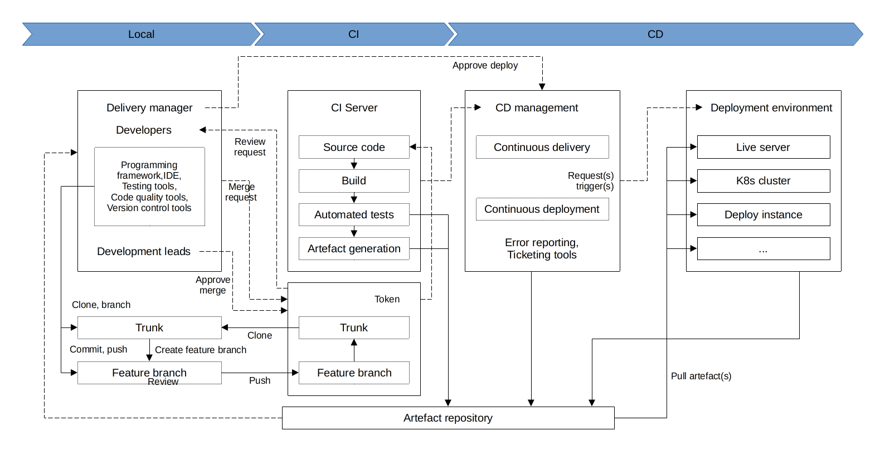

Application code workflows
An overview of the background info, design, and implementation of a production-ready CI/CD pipeline for application code.

Assumptions
Assuming trunk based development:
Small, frequent commits reduce the scope of each integration
Automated testing
Feature toggles
Cloning and branching
The first step in making changes to a code base is to clone the repository locally and begin development on a new branch. Using git:
git clone $REPO_URL
git checkout -b $NEW_BRANCH_NAME
Running code locally
To run the code locally to sanity check the current state of trunk (to be clean and unbroken), spin up a local environment for the application code to test it out. For a simple web server written in a general purpose programming language, run the server code to bring up a local copy of the application and manually test it by loading the web server in the browser. Or, run the automated test suite associated with the application.
Making code changes
Testing application code can be done in seconds (because everything is local).
Pull (Merge) requests and reviews
Focus the review process on things that are hard to check through automated testing, such as checking security flaws, reviewing general code design, enforcing style guides, or identifying potential performance issues on larger data sets.
Running automated tests
Set up a CI server (such as Jenkins or CircleCI) giving a consistent build process on a repeatable and isolated platform, with commit hooks that automatically trigger testing of any branch submitted for review. Most developers will run a subset of the tests that relate to the feature branch being done, leading to faster feedback cycles. Include automated tests designed to verify that the change didn’t create any regressions while testing a new change.
The CI server is to run the full automated test suite for the application code, and report the results as a summary, using a simple green check mark to indicate success or a red “X” for failure.
Merging and releasing
After merging the code into trunk, a new, immutable, versioned release artifact can be generated that can be deployed.
The release artifact will vary widely from project to project for application code. This could be anything from a source file tarball or a jar file executable to a docker image or a VM image. Make sure the artifact is immutable, and that it has a unique version number.
Deploying
Once review and tests pass, the deployment part of the CI/CD pipeline begins. The code can be deployed to development, testing, or production systems.
Deploying the release artifact to the environment depends on how the code is packaged. If it is a library, then it will be deployed when the application that consumes it updates the library version. In this case, nothing needs to be done to deploy it to the application. For services, the application can be deployed to live servers. For docker images, this might mean updating service definitions for the docker cluster (ECS or Kubernetes). For machine images, this might mean updating the autoscaling group to deploy instances with the new image.
There are various strategies for deploying application code, such as canary and blue-green deployments.